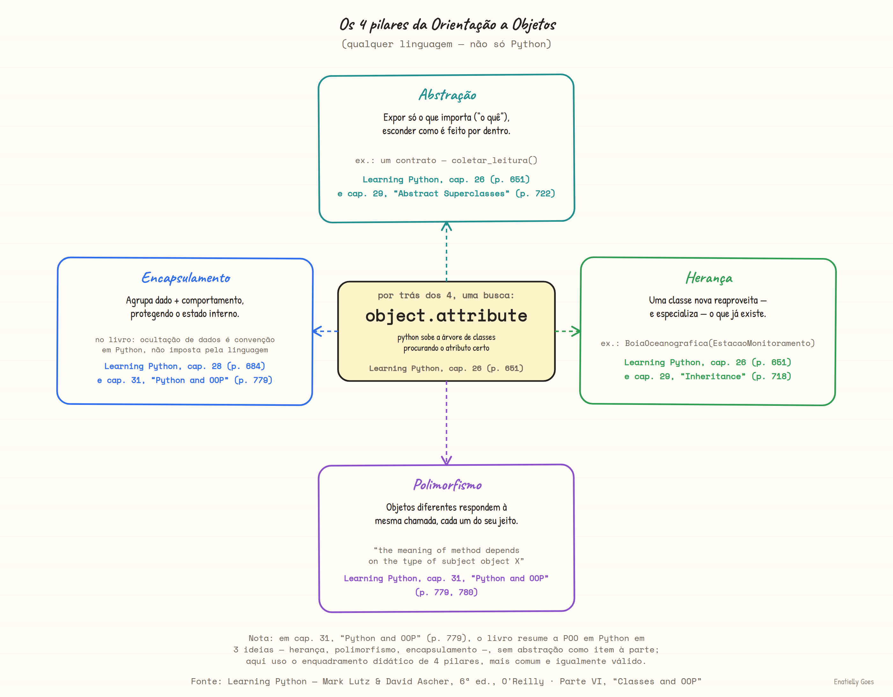
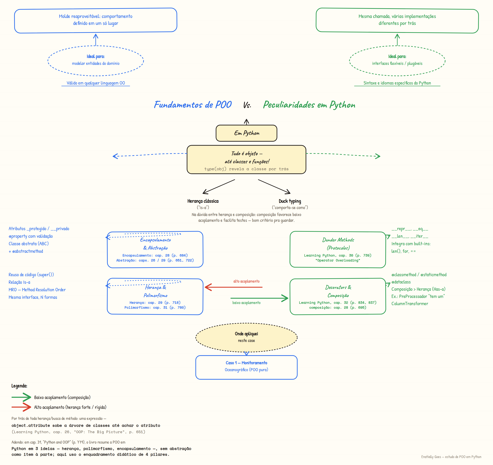

Prometi a mim mesma estudar Orientação a Objetos de um jeito que realmente ficasse — não decorando definição de classe e objeto, mas resolvendo um problema de design que eu reconheço. Este é um estudo de caso que venho documentando: fico só nos fundamentos, em Python puro, sem scikit-learn, sem pandas, nada. Só POO.
Antes do case: os quatro pilares, em geral
Como diz Lutz logo na abertura do capítulo sobre classes: "classes make it easy to write new programs by customizing existing code" — em vez de reescrever, você reaproveita.— Learning Python, cap. 26, "OOP: The Big Picture" (p. 649)
O próprio livro reconhece que isso pede planejamento prévio — por isso interessa mais a quem pensa em construção de produto a longo prazo do que a quem só precisa entregar algo rápido, sem tempo de sobra. A promessa, quando bem aplicada, é que classes "can actually cut development time radically" (Learning Python, p. 649) — e é exatamente esse tipo de investimento de longo prazo que este estudo tenta documentar.
Antes de entrar na rede de estações, vale alinhar o vocabulário — não como peculiaridade do Python, mas como os quatro pilares que qualquer linguagem orientada a objetos (Java, C++, Python, o que for) implementa à sua maneira. As citações de página abaixo são do livro que uso como referência neste estudo, Learning Python: Powerful Object-Oriented Programming (Mark Lutz & David Ascher, 6ª ed., O'Reilly), Parte VI — "Classes and OOP".

Com esse vocabulário geral em mãos, o restante do artigo mostra como cada um desses pilares aparece — concretamente, em código — no caso da rede de monitoramento oceanográfico.
O problema: quatro estações, uma interface
Imagine uma rede de monitoramento com quatro tipos de estação bem diferentes entre si: uma boia fundeada em alto mar, uma estação costeira fixa em terra, uma estação submersa no fundo do oceano, e um sensor amador mantido por um voluntário — sem nenhum vínculo oficial com a rede. Cada uma mede uma grandeza diferente (temperatura, vento, pressão), tem atributos próprios, e nem todas nasceram dentro da mesma hierarquia de classes.
Mas a rede como um todo precisa tratar todas elas do mesmo jeito: pedir uma leitura, sem se importar com o que está por trás. Esse é exatamente o tipo de problema que a Orientação a Objetos resolve bem — e é o fio condutor deste case.
EstacaoMonitoramento. O sensor amador não herda nada — só tem os métodos certos, e isso já basta pra entrar na rede.Os quatro pilares, no código
1 Abstração
A classe base EstacaoMonitoramento declara o que toda estação faz — nunca como. coletar_leitura() é um contrato: ABC + @abstractmethod impedem que eu instancie a classe base diretamente, ou que eu crie uma subclasse e esqueça de implementar o método. O design trava antes mesmo dos testes rodarem.
class EstacaoMonitoramento(ABC):
"""Classe base abstrata para qualquer estação da rede."""
def __init__(
self, nome: str, latitude: float, longitude: float
) -> None:
self.nome = nome
self.latitude = latitude
self.longitude = longitude
self._historico: list[LeituraSensor] = []
@abstractmethod
def coletar_leitura(self) -> LeituraSensor:
"""Cada subclasse decide o que e como medir."""
raise NotImplementedError
@property
@abstractmethod
def tipo(self) -> str:
"""Também abstrato: força a subclasse a se identificar."""
raise NotImplementedErrorTentar rodar EstacaoMonitoramento("x", 0, 0) direto falha com TypeError: Can't instantiate abstract class — Python não deixa passar.
2 Encapsulamento
Uso duas formas de encapsulamento no mesmo arquivo. A primeira é convenção: self._historico com um underscore avisa "isto é implementação interna". A segunda é validação de verdade, via @property: uma BoiaOceanografica simplesmente não consegue existir com profundidade de ancoragem negativa — o erro acontece na hora da atribuição, não trinta linhas depois, quando alguém tenta calcular alguma coisa com um número impossível.
@property
def profundidade_ancoragem(self) -> float:
return self._profundidade_ancoragem
@profundidade_ancoragem.setter
def profundidade_ancoragem(self, valor: float) -> None:
# Impossível criar uma boia com profundidade negativa, mesmo por engano.
if valor <= 0:
raise ValueError("profundidade_ancoragem deve ser positiva")
self._profundidade_ancoragem = valor>>> BoiaOceanografica("Boia-X", 0, 0, profundidade_ancoragem=-50)
ValueError: profundidade_ancoragem deve ser positiva3 Herança
BoiaOceanografica, EstacaoCosteira e EstacaoSubmersa herdam de EstacaoMonitoramento e reaproveitam __init__, status(), total_leituras e metros_para_pes() de graça. Cada uma só implementa o que é de fato específico dela.
class BoiaOceanografica(EstacaoMonitoramento):
"""Boia fundeada que mede temperatura da superfície do mar."""
def __init__(
self, nome, latitude, longitude, profundidade_ancoragem
) -> None:
super().__init__(nome, latitude, longitude)
self.profundidade_ancoragem = profundidade_ancoragem
@property
def tipo(self) -> str:
return "Boia Oceanográfica"
def coletar_leitura(self) -> LeituraSensor:
temperatura = 27.5 - (self.profundidade_ancoragem / 1000)
return LeituraSensor(grandeza="Temperatura da superfície", valor=temperatura, unidade="°C")Repare que status() — herdado, nunca reescrito — já usa polimorfismo: ele chama self.coletar_leitura() sem saber qual subclasse está por trás.
4 Polimorfismo (e a peculiaridade que eu mais gostei: duck typing)
RedeDeMonitoramento.coletar_todas() não sabe — e não precisa saber — se está lidando com uma boia, uma estação submersa ou um sensor cidadão-cientista. Ela só chama .coletar_leitura() e .tipo, e confia que cada objeto sabe se virar. Isso é polimorfismo clássico para as três subclasses.
Mas o SensorCidadaoCientista é o mais interessante dos quatro: ele nem herda de EstacaoMonitoramento. Ele só tem os atributos e métodos certos — e isso basta.
"Se anda como pato e grasna como pato, é um pato."— a peculiaridade Python conhecida como duck typing
class SensorCidadaoCientista:
"""Sensor amador, mantido por um voluntário — fora da rede oficial."""
def __init__(self, nome: str) -> None:
self.nome = nome
self.tipo = "Sensor Cidadão"
def coletar_leitura(self) -> LeituraSensor:
return LeituraSensor(grandeza="Temperatura da superfície", valor=26.8, unidade="°C")É por isso que dá pra plugar um sensor amador numa rede oficial sem tocar em uma linha da hierarquia de classes:
def coletar_todas(self) -> list[str]:
"""Não importa se é uma BoiaOceanografica, uma EstacaoSubmersa ou um
SensorCidadaoCientista que nem herda da hierarquia — todos respondem a
.coletar_leitura() e .tipo, então o loop funciona igual pra todos."""
return [estacao.status() if hasattr(estacao, "status") else
f"[{estacao.tipo}] {estacao.nome}: {estacao.coletar_leitura()}"
for estacao in self._estacoes]Peculiaridades do Python que aparecem no caminho
Os quatro pilares valem pra qualquer linguagem orientada a objetos. Mas o código também usa um punhado de idiomas específicos do Python que valem a pena destacar:
@dataclass
Atalho pythônico pra uma classe que é, essencialmente, um container de dados. Gera __init__, __repr__ e __eq__ automaticamente a partir dos campos declarados.
@dataclass
class LeituraSensor:
grandeza: str
valor: float
unidade: str
coletado_em: datetime = field(default_factory=lambda: datetime.now(timezone.utc))dunder methods
__repr__ e __eq__ na classe base; __len__ e __iter__ em RedeDeMonitoramento — o que permite len(rede) e for estacao in rede: funcionarem como em qualquer coleção nativa do Python.
def __len__(self) -> int:
return len(self._estacoes)
def __iter__(self) -> Iterator:
return iter(self._estacoes)@classmethod
Construtor alternativo a partir de um dicionário de configuração — padrão comum ao carregar estações de um arquivo JSON/YAML da rede.
@classmethod
def from_config(cls, config: dict) -> "EstacaoCosteira":
return cls(
nome=config["nome"],
latitude=config["latitude"],
longitude=config["longitude"],
altitude=config.get("altitude", 0.0),
)@staticmethod
Função utilitária que pertence à classe por contexto, mas não depende de nenhuma instância específica.
@staticmethod
def metros_para_pes(metros: float) -> float:
return metros * 3.28084Rodando de verdade
Sem mocks, sem dados fictícios inventados pro artigo — esta é a saída real de python src/monitoramento_oceanografico.py:
Rede: Rede PEM-NE (exemplo didático) -- 4 estações
[Boia Oceanográfica] Boia-01: Temperatura da superfície = 27.30 °C
[Estação Costeira] Costeira-Recife: Velocidade do vento = 12.15 m/s
[Estação Submersa] Submersa-03: Pressão hidrostática = 86.00 atm
[Sensor Cidadão] Voluntário-Praia-do-Pina: Temperatura da superfície = 26.80 °C
200 m equivalem a 656.2 pés
repr da boia: BoiaOceanografica(nome='Boia-Teste')
Boia-01 == Boia-Teste? FalseA última linha vale reparar: Boia-01 == Boia-Teste? False só existe porque eu implementei __eq__ comparando por nome — sem isso, Python compararia identidade de objeto (is), e duas boias com o mesmo nome nunca seriam "iguais".
Testado, não só demonstrado
O repositório tem uma suíte de 9 testes com pytest cobrindo, entre outras coisas: que as três subclasses respeitam o contrato da classe abstrata, que a validação de profundidade_ancoragem realmente barra valores inválidos, que o sensor cidadão-cientista entra na rede mesmo sem herança, e que len()/for funcionam via os dunder methods. Não é só "o código roda" — é "o design se sustenta".
Para ir além
- Código completo + testes: github.com/enatielly/SEU-REPOSITORIO-AQUI.
- Mapa mental com os quatro pilares e as peculiaridades do Python, logo abaixo.
